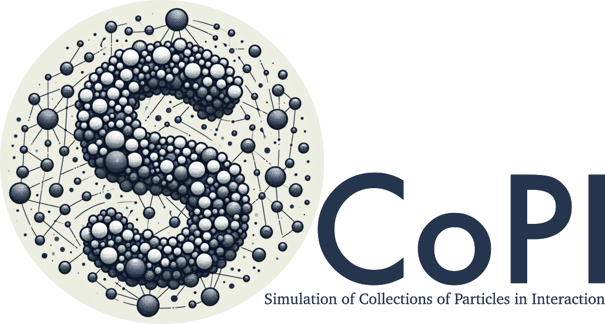

From Copilot to a team of AI software engineers

- Research engineer in scientific computing at CNRS
- Co-leader of the HPC@Maths team
- Member of the groupe Calcul board
- Developer of open-source software



Some comments before we start
- I’m not an expert of LLM and their construction.
- The world of LLM is vast and the field of possibilities almost infinite.
- Some points may be wrong and lack precision.
- The learning curve is steep.
- I’m a baby of a one month and a half in this world.
What can you do with GitHub Copilot ?
- Code completion as you type (2,000 intelligent code completions a month)
- Chat discussion to explain code, to write tests or documentation, … (50 Copilot Chat messages a month)
- Use the open files and your GitHub repositories as a knowledge base
- Web search and other agents on the marketplace
- Two models available: Anthropic’s Claude 3.5 Sonnet or OpenAI’s GPT-4o
The Copilot alternatives
What models do I need to choose to help me develop my software ?
Do I have enough resources to use them ?
What are the limitations of these models ?
Use open source models
Learderboards
Learderboards

Other leaderboards
- Code evaluation
- Mathematics abilities
Can I use LLM models locally ?
1 GPU A100 - Juliet
MacBook Pro M1
Msty
Offline-first, online-ready
Works seamlessly offline while supporting online models.
Parallel multiverse chats
Compare responses from different AI models in real-time.
Unified access to models
Supports models from Hugging Face, Ollama, and Open Router.
Prompt management
Offers a library of prompts and allows custom additions.
Ultimate privacy
No personal data leaves the user’s machine
But finally what do I need ?
- To have an AI assistant that knows
- the programming language I use
- the documentation of my third-party libraries
- my software and the mathematics behind it
- Specialized models for each step of development
- Not to iterate over LLM models again and again
- To have a memory of what was done
What we call an agent ?
Use case: depixelizing
Use case: Hilbert curve
def rot(n, x, y, rx, ry):
if ry == 0:
if rx == 1:
x = n - 1 - x
y = n - 1 - y
return y, x
return x, y
def d2xy(n: int, d: int):
t = d
x = y = 0
s = 1
while (s < n):
rx = 1 & (t//2)
ry = 1 & (t ^ rx)
x, y = rot(s, x, y, rx, ry)
x += s * rx
y += s * ry
t = t//4
s *= 2
return x, y
if __name__ == "__main__":
x = y = 0
n = 8
coords = []
for i in range(1<<n):
coords.append(d2xy(1<<n, i))How can I enrich a generic LLM model ?


- Web search (Tavily, DuckDuckGo, Brave, …)
- Python script execution
- GitHub interactions
- …
From scratch


The multi agent tools
- CrewAI is a lean, lightning-fast Python framework built entirely from scratch—completely independent of LangChain or other agent frameworks.
- Langflow is a new, visual framework for building multi-agent and RAG applications. It is open-source, Python-powered, fully customizable, and LLM and vector store agnostic.
- AutoAgent is a Fully-Automated and highly Self-Developing framework that enables users to create and deploy LLM agents through Natural Language Alone.
- SmolAgents is the simplest framework out there to build powerful agents!
- …
Some demos
So, what did I learn?
- The context is probably the most important.
- XML can help you structure your output messages.
- It’s not that simple to get the tools and the LLM to talk to each other.
- There are so many software packages out there that it’s hard to choose the right one.
- I won’t be getting a team of AI assistants working on my software developments any time soon.
But I’m not done yet !!
Model Context Protocol
References
More about RAG
Advanced RAG Techniques: Elevating Your Retrieval-Augmented Generation Systems
More about CAG
Don’t Do RAG: When Cache-Augmented Generation is All You Need for Knowledge Tasks
If there is only one article that you need to read
A survey on LLM-based multi-agent systems: workflow, infrastructure, and challenges
Prompt examples on various topics
fabric is an open-source framework for augmenting humans using AI
Thank you for your attention
And thanks to MesoNET
especially the ROMEO team to let me use their computing resources !
ia4dev-2025 -  - 1 April 2025
- 1 April 2025